100 distinct nonhuman identities · 83 Alex’s Mobs / 14 Twilight Forest / 3 Goety. Mixed sizes; not 100 small species. Source gray reconstructions, two views each. Corrected positive-Y camera. No native screenshots or full animation study.
001 AlligatorSnappingTurtle
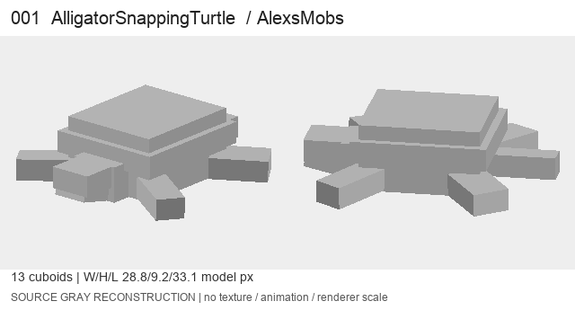
布局：低扁叠壳与前伸头
支撑：四条外展短足
交互形状：前颚
AlexsMobs 官方源码 · 09755dade2cf13 cuboids · Literal bind pose only (Raven source landed feet excepted); zero-thickness planes are opaque gray, ignoring alpha masks. No animations, runtime scales, inherited cuboids, renderer layers or attack semantics reconstructed.
002 Anteater
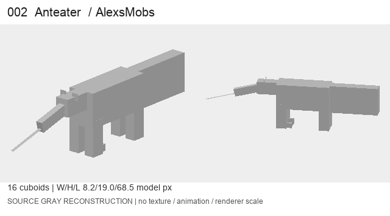
布局：细长躯干与超长尾
支撑：四条直足
交互形状：尖吻与细舌
AlexsMobs 官方源码 · 09755dade2cf16 cuboids · Literal bind pose only (Raven source landed feet excepted); zero-thickness planes are opaque gray, ignoring alpha masks. No animations, runtime scales, inherited cuboids, renderer layers or attack semantics reconstructed.
003 BaldEagle
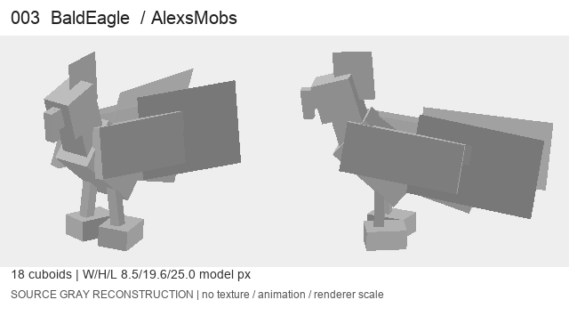
布局：折叠侧翼与高头
支撑：双腿宽爪
交互形状：钩喙
AlexsMobs 官方源码 · 09755dade2cf18 cuboids · Literal bind pose only (Raven source landed feet excepted); zero-thickness planes are opaque gray, ignoring alpha masks. No animations, runtime scales, inherited cuboids, renderer layers or attack semantics reconstructed.
004 BananaSlug
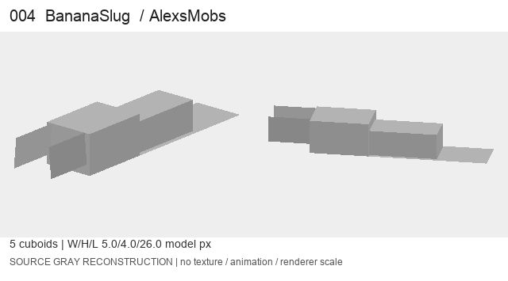
布局：低长分段躯干
支撑：腹面滑行，无腿
交互形状：前端触角
AlexsMobs 官方源码 · 09755dade2cf5 cuboids · Literal bind pose only (Raven source landed feet excepted); zero-thickness planes are opaque gray, ignoring alpha masks. No animations, runtime scales, inherited cuboids, renderer layers or attack semantics reconstructed.
005 Bison
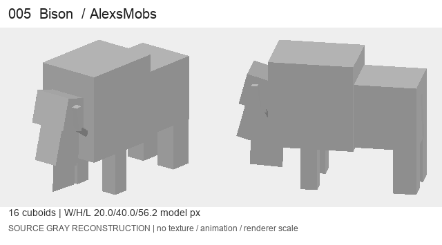
布局：高肩厚胸与低头
支撑：粗四足
交互形状：前吻与侧角
AlexsMobs 官方源码 · 09755dade2cf16 cuboids · Literal bind pose only (Raven source landed feet excepted); zero-thickness planes are opaque gray, ignoring alpha masks. No animations, runtime scales, inherited cuboids, renderer layers or attack semantics reconstructed.
006 Blobfish
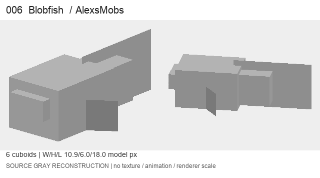
布局：厚头短鱼身
支撑：腹鳍侧鳍尾板
交互形状：前口
AlexsMobs 官方源码 · 09755dade2cf6 cuboids · Literal bind pose only (Raven source landed feet excepted); zero-thickness planes are opaque gray, ignoring alpha masks. No animations, runtime scales, inherited cuboids, renderer layers or attack semantics reconstructed.
007 BlueJay
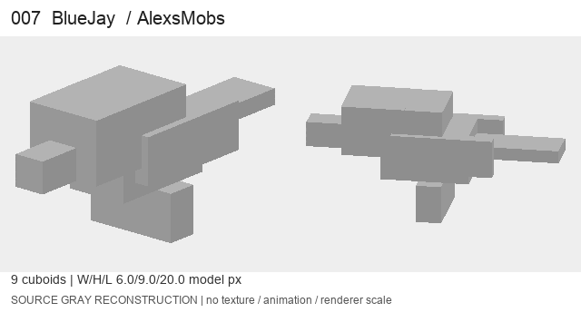
布局：小头横身与直尾
支撑：短腿与贴身双翼
交互形状：短喙
AlexsMobs 官方源码 · 09755dade2cf9 cuboids · Literal bind pose only (Raven source landed feet excepted); zero-thickness planes are opaque gray, ignoring alpha masks. No animations, runtime scales, inherited cuboids, renderer layers or attack semantics reconstructed.
008 Bunfungus
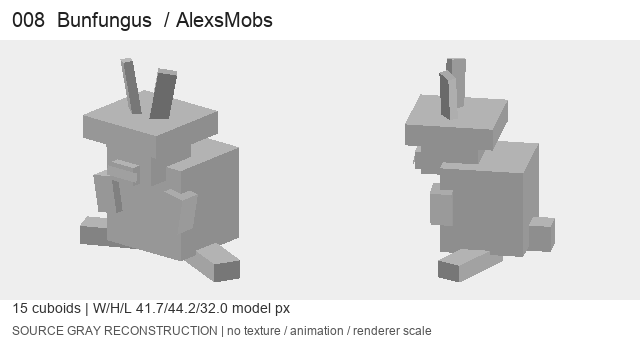
布局：宽头长耳与竖躯干
支撑：后足宽底
交互形状：前口与短前肢
AlexsMobs 官方源码 · 09755dade2cf15 cuboids · Literal bind pose only (Raven source landed feet excepted); zero-thickness planes are opaque gray, ignoring alpha masks. No animations, runtime scales, inherited cuboids, renderer layers or attack semantics reconstructed.
009 CachalotWhale
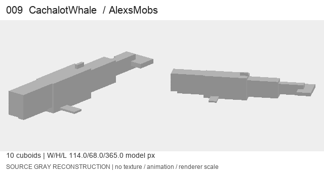
布局：超长水平鲸身
支撑：胸鳍与水平尾叶
交互形状：大前头
AlexsMobs 官方源码 · 09755dade2cf10 cuboids · Literal bind pose only (Raven source landed feet excepted); zero-thickness planes are opaque gray, ignoring alpha masks. No animations, runtime scales, inherited cuboids, renderer layers or attack semantics reconstructed.
010 Caiman
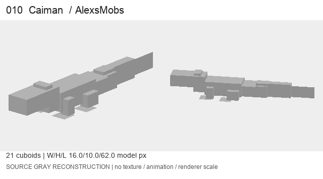
布局：低长吻与长尾
支撑：外展短四足
交互形状：前吻
AlexsMobs 官方源码 · 09755dade2cf21 cuboids · Literal bind pose only (Raven source landed feet excepted); zero-thickness planes are opaque gray, ignoring alpha masks. No animations, runtime scales, inherited cuboids, renderer layers or attack semantics reconstructed.
011 CapuchinMonkey
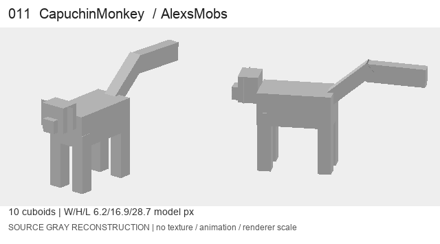
布局：小头横身与抬升尾
支撑：四条细长足
交互形状：手部与前吻
AlexsMobs 官方源码 · 09755dade2cf10 cuboids · Literal bind pose only (Raven source landed feet excepted); zero-thickness planes are opaque gray, ignoring alpha masks. No animations, runtime scales, inherited cuboids, renderer layers or attack semantics reconstructed.
012 CatfishLarge
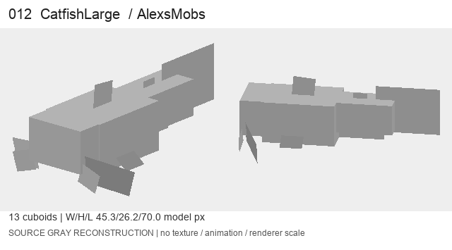
布局：厚头长鱼身与尾板
支撑：侧鳍腹鳍
交互形状：前口须
AlexsMobs 官方源码 · 09755dade2cf13 cuboids · Literal bind pose only (Raven source landed feet excepted); zero-thickness planes are opaque gray, ignoring alpha masks. No animations, runtime scales, inherited cuboids, renderer layers or attack semantics reconstructed.
013 Cockroach
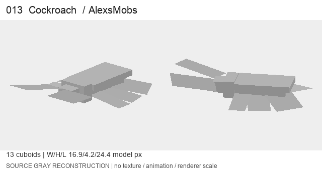
布局：低腹与背翼覆片
支撑：三对平面足
交互形状：前触角
AlexsMobs 官方源码 · 09755dade2cf13 cuboids · Literal bind pose only (Raven source landed feet excepted); zero-thickness planes are opaque gray, ignoring alpha masks. No animations, runtime scales, inherited cuboids, renderer layers or attack semantics reconstructed.
014 CombJelly
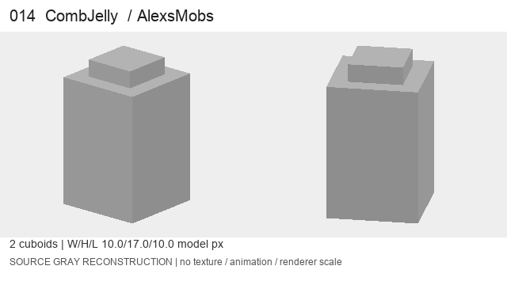
布局：上下叠合胶体
支撑：无实体足，水中漂浮
交互形状：纹理细节缺失，器官不可判定
AlexsMobs 官方源码 · 09755dade2cf2 cuboids · Literal bind pose only (Raven source landed feet excepted); zero-thickness planes are opaque gray, ignoring alpha masks. No animations, runtime scales, inherited cuboids, renderer layers or attack semantics reconstructed.
015 Cosmaw
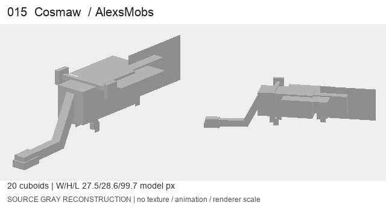
布局：长身与下折前嘴
支撑：腹部短附肢与侧翼
交互形状：双段长颚
AlexsMobs 官方源码 · 09755dade2cf20 cuboids · Literal bind pose only (Raven source landed feet excepted); zero-thickness planes are opaque gray, ignoring alpha masks. No animations, runtime scales, inherited cuboids, renderer layers or attack semantics reconstructed.
016 CosmicCod
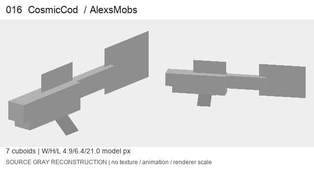
布局：窄身与高背鳍
支撑：腹侧鳍与尾叶
交互形状：小前口
AlexsMobs 官方源码 · 09755dade2cf7 cuboids · Literal bind pose only (Raven source landed feet excepted); zero-thickness planes are opaque gray, ignoring alpha masks. No animations, runtime scales, inherited cuboids, renderer layers or attack semantics reconstructed.
017 CrimsonMosquito
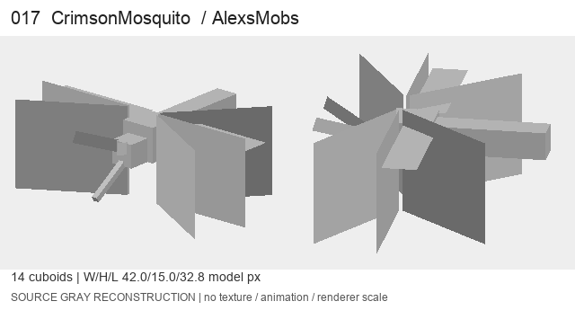
布局：小虫胸与巨大侧面片
支撑：细足与背翼
交互形状：长刺吻
AlexsMobs 官方源码 · 09755dade2cf14 cuboids · Literal bind pose only (Raven source landed feet excepted); zero-thickness planes are opaque gray, ignoring alpha masks. No animations, runtime scales, inherited cuboids, renderer layers or attack semantics reconstructed.
018 Crocodile
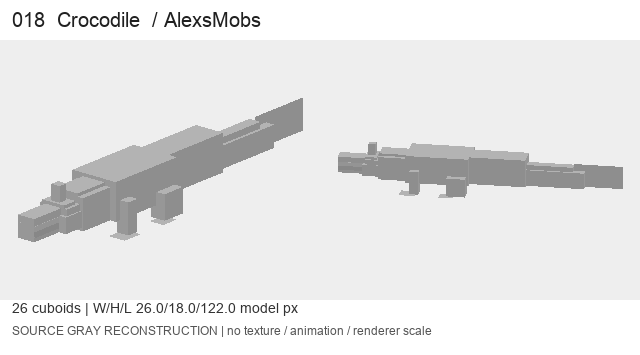
布局：长吻厚躯干与长尾
支撑：短四足
交互形状：分段前颚
AlexsMobs 官方源码 · 09755dade2cf26 cuboids · Literal bind pose only (Raven source landed feet excepted); zero-thickness planes are opaque gray, ignoring alpha masks. No animations, runtime scales, inherited cuboids, renderer layers or attack semantics reconstructed.
019 Crow
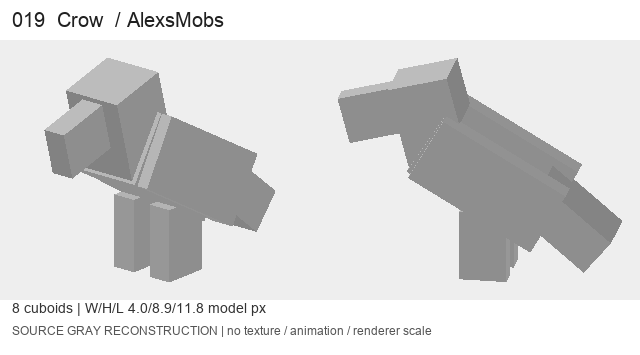
布局：斜躯干与折侧翼
支撑：双足
交互形状：前喙
AlexsMobs 官方源码 · 09755dade2cf8 cuboids · Literal bind pose only (Raven source landed feet excepted); zero-thickness planes are opaque gray, ignoring alpha masks. No animations, runtime scales, inherited cuboids, renderer layers or attack semantics reconstructed.
020 DevilsHolePupfish
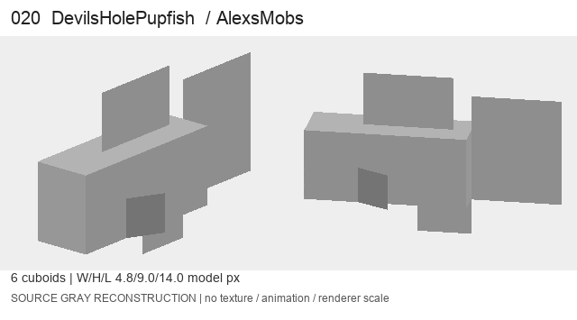
布局：紧凑鱼身与大尾板
支撑：背鳍侧鳍
交互形状：小口
AlexsMobs 官方源码 · 09755dade2cf6 cuboids · Literal bind pose only (Raven source landed feet excepted); zero-thickness planes are opaque gray, ignoring alpha masks. No animations, runtime scales, inherited cuboids, renderer layers or attack semantics reconstructed.
021 DropBear
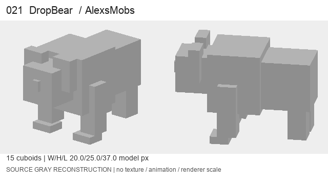
布局：圆厚头与块状横身
支撑：短粗四足
交互形状：宽前吻
AlexsMobs 官方源码 · 09755dade2cf15 cuboids · Literal bind pose only (Raven source landed feet excepted); zero-thickness planes are opaque gray, ignoring alpha masks. No animations, runtime scales, inherited cuboids, renderer layers or attack semantics reconstructed.
022 Elephant
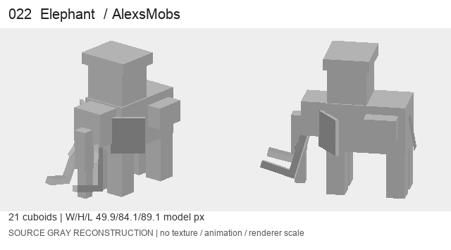
布局：高头大耳与横身
支撑：粗四足
交互形状：长鼻与象牙
AlexsMobs 官方源码 · 09755dade2cf21 cuboids · Literal bind pose only (Raven source landed feet excepted); zero-thickness planes are opaque gray, ignoring alpha masks. No animations, runtime scales, inherited cuboids, renderer layers or attack semantics reconstructed.
023 Emu
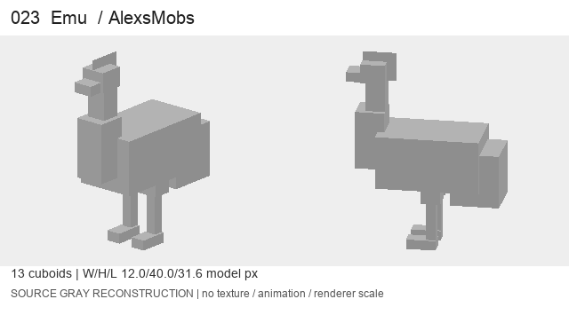
布局：高长颈与短尾
支撑：长双腿宽脚
交互形状：短喙
AlexsMobs 官方源码 · 09755dade2cf13 cuboids · Literal bind pose only (Raven source landed feet excepted); zero-thickness planes are opaque gray, ignoring alpha masks. No animations, runtime scales, inherited cuboids, renderer layers or attack semantics reconstructed.
024 Endergrade
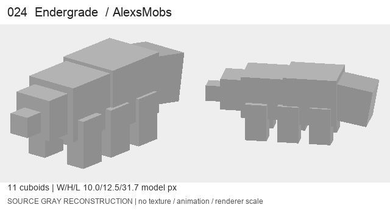
布局：梯级头与分节横身
支撑：多对短足
交互形状：前吻
AlexsMobs 官方源码 · 09755dade2cf11 cuboids · Literal bind pose only (Raven source landed feet excepted); zero-thickness planes are opaque gray, ignoring alpha masks. No animations, runtime scales, inherited cuboids, renderer layers or attack semantics reconstructed.
025 Enderiophage
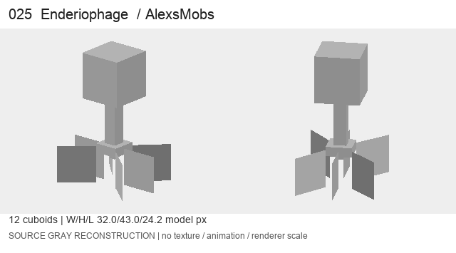
布局：方头细杆与放射底部
支撑：细长放射附肢，无常规足
交互形状：底部接触附肢
AlexsMobs 官方源码 · 09755dade2cf12 cuboids · Literal bind pose only (Raven source landed feet excepted); zero-thickness planes are opaque gray, ignoring alpha masks. No animations, runtime scales, inherited cuboids, renderer layers or attack semantics reconstructed.
026 Flutter
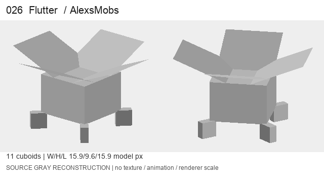
布局：箱状腹与上展花瓣
支撑：底部短附肢，漂浮形态
交互形状：花瓣与中央头
AlexsMobs 官方源码 · 09755dade2cf11 cuboids · Literal bind pose only (Raven source landed feet excepted); zero-thickness planes are opaque gray, ignoring alpha masks. No animations, runtime scales, inherited cuboids, renderer layers or attack semantics reconstructed.
027 Fly
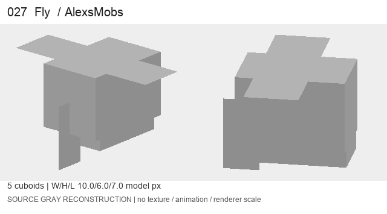
布局：方腹与交叉薄翼
支撑：薄腿面片
交互形状：前端头部
AlexsMobs 官方源码 · 09755dade2cf5 cuboids · Literal bind pose only (Raven source landed feet excepted); zero-thickness planes are opaque gray, ignoring alpha masks. No animations, runtime scales, inherited cuboids, renderer layers or attack semantics reconstructed.
028 FlyingFish
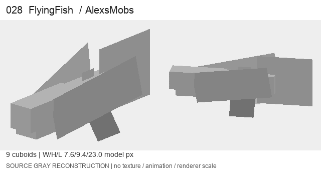
布局：窄长鱼身与展侧鳍
支撑：背鳍侧鳍尾叶
交互形状：前口
AlexsMobs 官方源码 · 09755dade2cf9 cuboids · Literal bind pose only (Raven source landed feet excepted); zero-thickness planes are opaque gray, ignoring alpha masks. No animations, runtime scales, inherited cuboids, renderer layers or attack semantics reconstructed.
029 FrilledShark
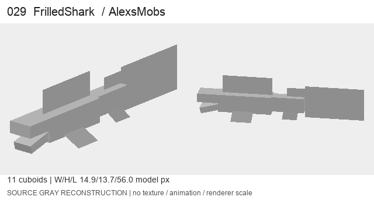
布局：细长鱼身与低颚
支撑：多处鳍片
交互形状：前颚
AlexsMobs 官方源码 · 09755dade2cf11 cuboids · Literal bind pose only (Raven source landed feet excepted); zero-thickness planes are opaque gray, ignoring alpha masks. No animations, runtime scales, inherited cuboids, renderer layers or attack semantics reconstructed.
030 Froststalker
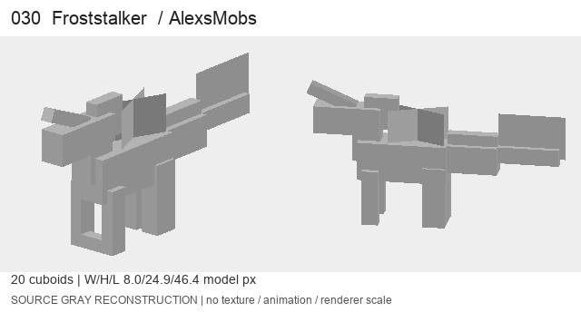
布局：窄高躯干与长尾
支撑：双腿宽足
交互形状：长吻与头顶突起
AlexsMobs 官方源码 · 09755dade2cf20 cuboids · Literal bind pose only (Raven source landed feet excepted); zero-thickness planes are opaque gray, ignoring alpha masks. No animations, runtime scales, inherited cuboids, renderer layers or attack semantics reconstructed.
031 Gazelle
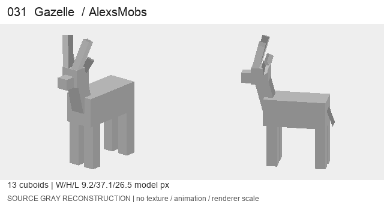
布局：细身长颈与双直角
支撑：细长四足
交互形状：额角
AlexsMobs 官方源码 · 09755dade2cf13 cuboids · Literal bind pose only (Raven source landed feet excepted); zero-thickness planes are opaque gray, ignoring alpha masks. No animations, runtime scales, inherited cuboids, renderer layers or attack semantics reconstructed.
032 GeladaMonkey
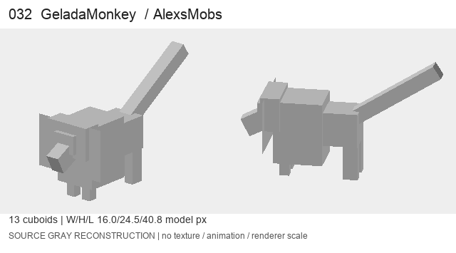
布局：厚前头与上扬长尾
支撑：短四足
交互形状：前口
AlexsMobs 官方源码 · 09755dade2cf13 cuboids · Literal bind pose only (Raven source landed feet excepted); zero-thickness planes are opaque gray, ignoring alpha masks. No animations, runtime scales, inherited cuboids, renderer layers or attack semantics reconstructed.
033 GiantSquid
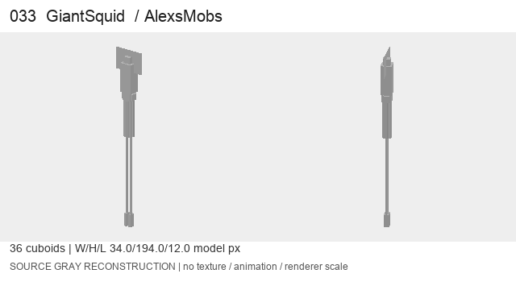
布局：垂直细长鱿鱼默认姿态
支撑：下垂腕与两根超长触腕
交互形状：腕端；默认姿态非游动姿态
AlexsMobs 官方源码 · 09755dade2cf36 cuboids · Literal bind pose only (Raven source landed feet excepted); zero-thickness planes are opaque gray, ignoring alpha masks. No animations, runtime scales, inherited cuboids, renderer layers or attack semantics reconstructed.
034 Gorilla
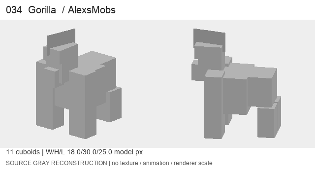
布局：厚胸与小后躯
支撑：长前臂短后足
交互形状：前臂与前口
AlexsMobs 官方源码 · 09755dade2cf11 cuboids · Literal bind pose only (Raven source landed feet excepted); zero-thickness planes are opaque gray, ignoring alpha masks. No animations, runtime scales, inherited cuboids, renderer layers or attack semantics reconstructed.
035 GrizzlyBear
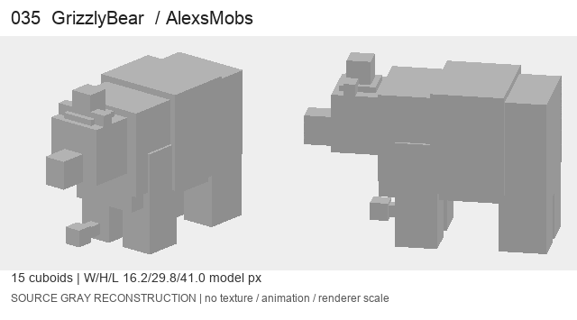
布局：厚背与下伸前头
支撑：粗四足
交互形状：前吻
AlexsMobs 官方源码 · 09755dade2cf15 cuboids · Literal bind pose only (Raven source landed feet excepted); zero-thickness planes are opaque gray, ignoring alpha masks. No animations, runtime scales, inherited cuboids, renderer layers or attack semantics reconstructed.
036 Guster
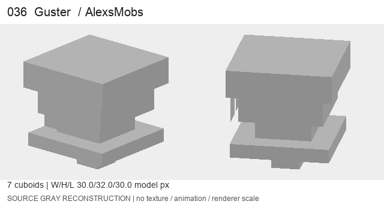
布局：上下叠块与中部缩腰
支撑：无实体腿，悬浮
交互形状：整团形态；灰模无旋风透明效果
AlexsMobs 官方源码 · 09755dade2cf7 cuboids · Literal bind pose only (Raven source landed feet excepted); zero-thickness planes are opaque gray, ignoring alpha masks. No animations, runtime scales, inherited cuboids, renderer layers or attack semantics reconstructed.
037 HammerheadShark
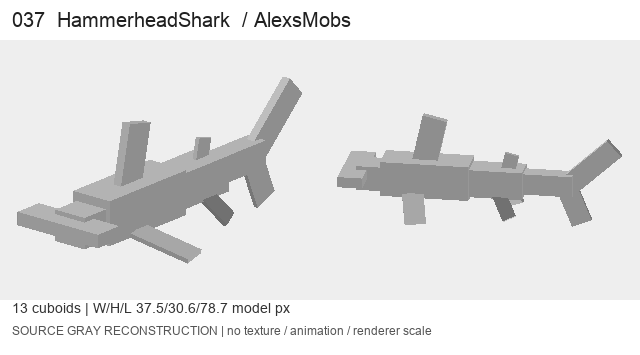
布局：长鱼身与横宽头
支撑：多鳍与竖尾叶
交互形状：横锤头与前口
AlexsMobs 官方源码 · 09755dade2cf13 cuboids · Literal bind pose only (Raven source landed feet excepted); zero-thickness planes are opaque gray, ignoring alpha masks. No animations, runtime scales, inherited cuboids, renderer layers or attack semantics reconstructed.
038 Hummingbird
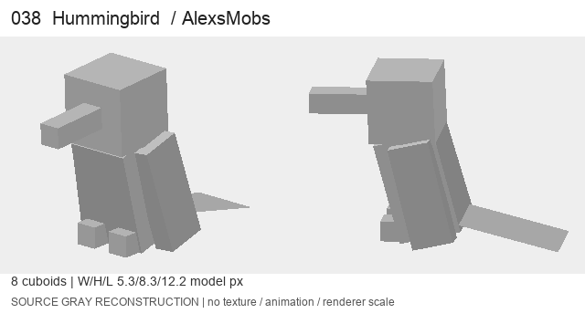
布局：小直立身与长细喙
支撑：微小足与折翼
交互形状：长喙
AlexsMobs 官方源码 · 09755dade2cf8 cuboids · Literal bind pose only (Raven source landed feet excepted); zero-thickness planes are opaque gray, ignoring alpha masks. No animations, runtime scales, inherited cuboids, renderer layers or attack semantics reconstructed.
039 Jerboa
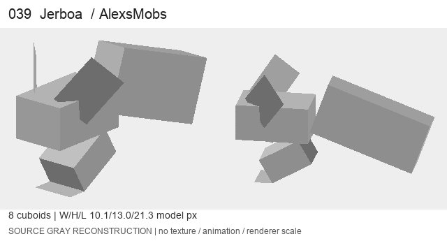
布局：小前身与大后躯
支撑：大后足小前肢
交互形状：前吻与耳
AlexsMobs 官方源码 · 09755dade2cf8 cuboids · Literal bind pose only (Raven source landed feet excepted); zero-thickness planes are opaque gray, ignoring alpha masks. No animations, runtime scales, inherited cuboids, renderer layers or attack semantics reconstructed.
040 Kangaroo
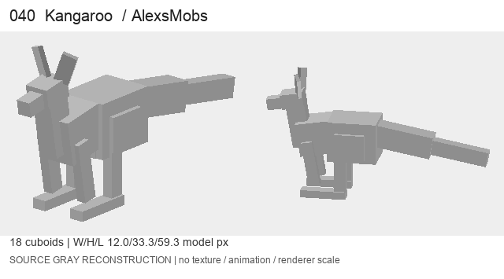
布局：高前胸与水平粗尾
支撑：大后腿，尾作平衡
交互形状：前肢与前吻
AlexsMobs 官方源码 · 09755dade2cf18 cuboids · Literal bind pose only (Raven source landed feet excepted); zero-thickness planes are opaque gray, ignoring alpha masks. No animations, runtime scales, inherited cuboids, renderer layers or attack semantics reconstructed.
041 KomodoDragon
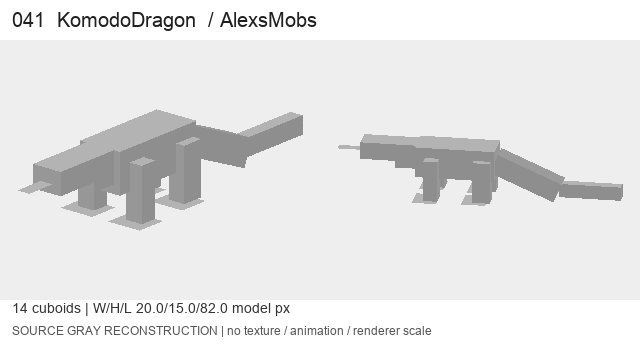
布局：长低躯干与折尾
支撑：短四足
交互形状：长吻与舌
AlexsMobs 官方源码 · 09755dade2cf14 cuboids · Literal bind pose only (Raven source landed feet excepted); zero-thickness planes are opaque gray, ignoring alpha masks. No animations, runtime scales, inherited cuboids, renderer layers or attack semantics reconstructed.
042 Laviathan
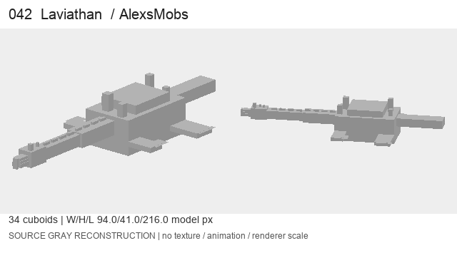
布局：超长前颈与宽低背
支撑：侧面大鳍片
交互形状：前端颚
AlexsMobs 官方源码 · 09755dade2cf34 cuboids · Literal bind pose only (Raven source landed feet excepted); zero-thickness planes are opaque gray, ignoring alpha masks. No animations, runtime scales, inherited cuboids, renderer layers or attack semantics reconstructed.
043 LeafcutterAnt
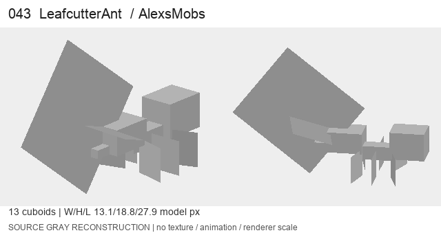
布局：三段虫身与上举叶片
支撑：多条细足
交互形状：前头；携带叶片非身体
AlexsMobs 官方源码 · 09755dade2cf13 cuboids · Literal bind pose only (Raven source landed feet excepted); zero-thickness planes are opaque gray, ignoring alpha masks. No animations, runtime scales, inherited cuboids, renderer layers or attack semantics reconstructed.
044 Lobster
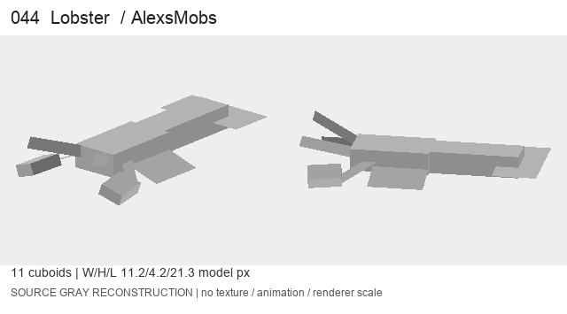
布局：低长壳与扇尾
支撑：薄足片与前钳
交互形状：双前钳
AlexsMobs 官方源码 · 09755dade2cf11 cuboids · Literal bind pose only (Raven source landed feet excepted); zero-thickness planes are opaque gray, ignoring alpha masks. No animations, runtime scales, inherited cuboids, renderer layers or attack semantics reconstructed.
045 ManedWolf
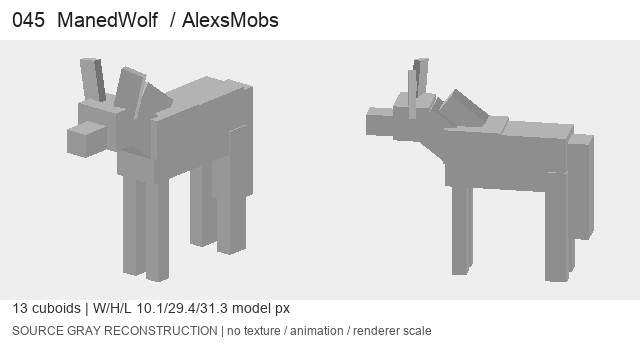
布局：高腿横躯与长耳
支撑：四条细长足
交互形状：前吻
AlexsMobs 官方源码 · 09755dade2cf13 cuboids · Literal bind pose only (Raven source landed feet excepted); zero-thickness planes are opaque gray, ignoring alpha masks. No animations, runtime scales, inherited cuboids, renderer layers or attack semantics reconstructed.
046 MantisShrimp
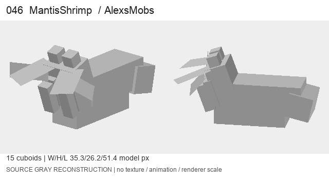
布局：厚分节腹与高眼柄
支撑：前附肢与腹下足片
交互形状：折叠前击肢
AlexsMobs 官方源码 · 09755dade2cf15 cuboids · Literal bind pose only (Raven source landed feet excepted); zero-thickness planes are opaque gray, ignoring alpha masks. No animations, runtime scales, inherited cuboids, renderer layers or attack semantics reconstructed.
047 MimicOctopus
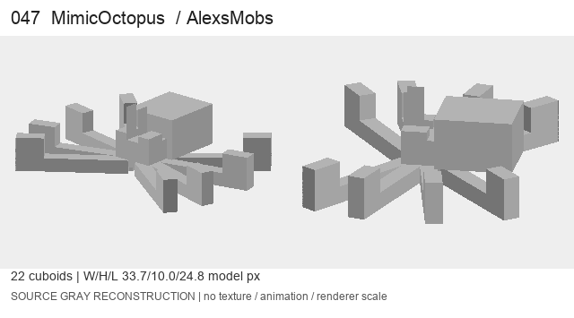
布局：低头囊与放射腕
支撑：八条折腕
交互形状：腕端
AlexsMobs 官方源码 · 09755dade2cf22 cuboids · Literal bind pose only (Raven source landed feet excepted); zero-thickness planes are opaque gray, ignoring alpha masks. No animations, runtime scales, inherited cuboids, renderer layers or attack semantics reconstructed.
048 Mimicube
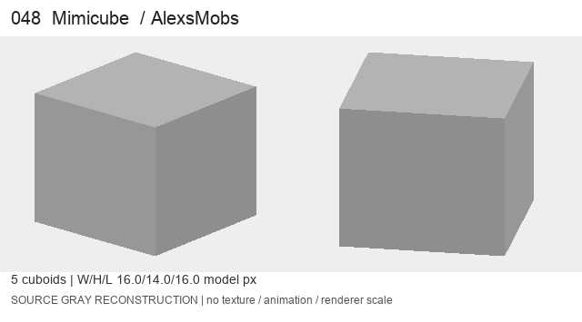
布局：重叠立方外壳
支撑：无可见腿
交互形状：纹理决定的五官未重建
AlexsMobs 官方源码 · 09755dade2cf5 cuboids · Literal bind pose only (Raven source landed feet excepted); zero-thickness planes are opaque gray, ignoring alpha masks. No animations, runtime scales, inherited cuboids, renderer layers or attack semantics reconstructed.
049 Moose
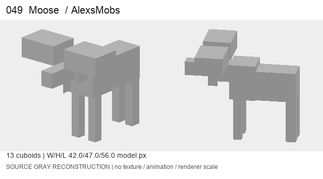
布局：长腿大身与宽额部
支撑：四条长足
交互形状：额部角结构
AlexsMobs 官方源码 · 09755dade2cf13 cuboids · Literal bind pose only (Raven source landed feet excepted); zero-thickness planes are opaque gray, ignoring alpha masks. No animations, runtime scales, inherited cuboids, renderer layers or attack semantics reconstructed.
050 Mudskipper
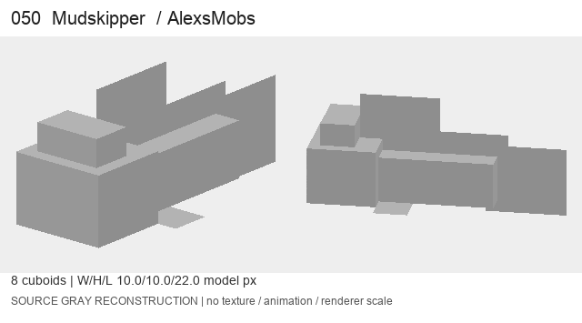
布局：低鱼身与凸眼
支撑：胸鳍与尾叶
交互形状：前口
AlexsMobs 官方源码 · 09755dade2cf8 cuboids · Literal bind pose only (Raven source landed feet excepted); zero-thickness planes are opaque gray, ignoring alpha masks. No animations, runtime scales, inherited cuboids, renderer layers or attack semantics reconstructed.
051 Mungus
布局：高方身与头顶片
支撑：双短足
交互形状：前面细长突起
AlexsMobs 官方源码 · 09755dade2cf7 cuboids · Literal bind pose only (Raven source landed feet excepted); zero-thickness planes are opaque gray, ignoring alpha masks. No animations, runtime scales, inherited cuboids, renderer layers or attack semantics reconstructed.
052 Orca
布局：长鱼身与高背鳍
支撑：胸鳍与水平尾叶
交互形状：宽前吻
AlexsMobs 官方源码 · 09755dade2cf11 cuboids · Literal bind pose only (Raven source landed feet excepted); zero-thickness planes are opaque gray, ignoring alpha masks. No animations, runtime scales, inherited cuboids, renderer layers or attack semantics reconstructed.
053 Platypus
布局：低横身与扁尾
支撑：四片低足
交互形状：宽扁前喙
AlexsMobs 官方源码 · 09755dade2cf10 cuboids · Literal bind pose only (Raven source landed feet excepted); zero-thickness planes are opaque gray, ignoring alpha masks. No animations, runtime scales, inherited cuboids, renderer layers or attack semantics reconstructed.
054 Potoo
布局：竖头身与短喙
支撑：双短腿与贴身翼
交互形状：前口
AlexsMobs 官方源码 · 09755dade2cf13 cuboids · Literal bind pose only (Raven source landed feet excepted); zero-thickness planes are opaque gray, ignoring alpha masks. No animations, runtime scales, inherited cuboids, renderer layers or attack semantics reconstructed.
055 Raccoon
布局：低横身与直长尾
支撑：短四足
交互形状：前吻与前爪
AlexsMobs 官方源码 · 09755dade2cf10 cuboids · Literal bind pose only (Raven source landed feet excepted); zero-thickness planes are opaque gray, ignoring alpha masks. No animations, runtime scales, inherited cuboids, renderer layers or attack semantics reconstructed.
056 RainFrog
布局：扁宽头与凸双眼
支撑：外展后足与小前足
交互形状：宽前口
AlexsMobs 官方源码 · 09755dade2cf10 cuboids · Literal bind pose only (Raven source landed feet excepted); zero-thickness planes are opaque gray, ignoring alpha masks. No animations, runtime scales, inherited cuboids, renderer layers or attack semantics reconstructed.
057 Rattlesnake
布局：低长渐细蛇身
支撑：无足，腹面
交互形状：前口与尾端
AlexsMobs 官方源码 · 09755dade2cf7 cuboids · Literal bind pose only (Raven source landed feet excepted); zero-thickness planes are opaque gray, ignoring alpha masks. No animations, runtime scales, inherited cuboids, renderer layers or attack semantics reconstructed.
058 Rhinoceros
布局：厚胸低头与翘角
支撑：粗四足
交互形状：鼻角
AlexsMobs 官方源码 · 09755dade2cf12 cuboids · Literal bind pose only (Raven source landed feet excepted); zero-thickness planes are opaque gray, ignoring alpha masks. No animations, runtime scales, inherited cuboids, renderer layers or attack semantics reconstructed.
059 Roadrunner
布局：前倾头颈与上翘尾
支撑：双腿与侧翼
交互形状：尖喙
AlexsMobs 官方源码 · 09755dade2cf16 cuboids · Literal bind pose only (Raven source landed feet excepted); zero-thickness planes are opaque gray, ignoring alpha masks. No animations, runtime scales, inherited cuboids, renderer layers or attack semantics reconstructed.
060 RockyRoller
布局：壳状分层背部
支撑：短四足
交互形状：前头；灰面片无法显示甲片边缘
AlexsMobs 官方源码 · 09755dade2cf19 cuboids · Literal bind pose only (Raven source landed feet excepted); zero-thickness planes are opaque gray, ignoring alpha masks. No animations, runtime scales, inherited cuboids, renderer layers or attack semantics reconstructed.
061 SeaBear
布局：高厚熊躯与背鳍
支撑：四足与尾板
交互形状：前吻
AlexsMobs 官方源码 · 09755dade2cf15 cuboids · Literal bind pose only (Raven source landed feet excepted); zero-thickness planes are opaque gray, ignoring alpha masks. No animations, runtime scales, inherited cuboids, renderer layers or attack semantics reconstructed.
062 Seagull
布局：中高头与横身
支撑：短双足与侧翼
交互形状：粗喙
AlexsMobs 官方源码 · 09755dade2cf10 cuboids · Literal bind pose only (Raven source landed feet excepted); zero-thickness planes are opaque gray, ignoring alpha masks. No animations, runtime scales, inherited cuboids, renderer layers or attack semantics reconstructed.
063 Seal
布局：低长身与分叉尾端
支撑：胸鳍与后鳍
交互形状：宽前口
AlexsMobs 官方源码 · 09755dade2cf12 cuboids · Literal bind pose only (Raven source landed feet excepted); zero-thickness planes are opaque gray, ignoring alpha masks. No animations, runtime scales, inherited cuboids, renderer layers or attack semantics reconstructed.
064 Shoebill
布局：高头斜身与大嘴
支撑：长双腿，折侧翼
交互形状：宽厚喙
AlexsMobs 官方源码 · 09755dade2cf17 cuboids · Literal bind pose only (Raven source landed feet excepted); zero-thickness planes are opaque gray, ignoring alpha masks. No animations, runtime scales, inherited cuboids, renderer layers or attack semantics reconstructed.
065 Skelewag
布局：窄骨架鱼身与长刺吻
支撑：薄鳍与尾板
交互形状：前刺
AlexsMobs 官方源码 · 09755dade2cf19 cuboids · Literal bind pose only (Raven source landed feet excepted); zero-thickness planes are opaque gray, ignoring alpha masks. No animations, runtime scales, inherited cuboids, renderer layers or attack semantics reconstructed.
066 Skreecher
布局：大头与细长前肢
支撑：双足与长前肢
交互形状：前肢；直立默认姿态
AlexsMobs 官方源码 · 09755dade2cf13 cuboids · Literal bind pose only (Raven source landed feet excepted); zero-thickness planes are opaque gray, ignoring alpha masks. No animations, runtime scales, inherited cuboids, renderer layers or attack semantics reconstructed.
067 Skunk
布局：低长身与上竖大尾
支撑：短四足
交互形状：尾部轮廓与前吻
AlexsMobs 官方源码 · 09755dade2cf9 cuboids · Literal bind pose only (Raven source landed feet excepted); zero-thickness planes are opaque gray, ignoring alpha masks. No animations, runtime scales, inherited cuboids, renderer layers or attack semantics reconstructed.
068 SnowLeopard
布局：低身与上卷长尾
支撑：粗四足
交互形状：前吻与爪
AlexsMobs 官方源码 · 09755dade2cf15 cuboids · Literal bind pose only (Raven source landed feet excepted); zero-thickness planes are opaque gray, ignoring alpha masks. No animations, runtime scales, inherited cuboids, renderer layers or attack semantics reconstructed.
069 SoulVulture
布局：前伸颈与上折翼
支撑：双足与大双翼
交互形状：钩喙
AlexsMobs 官方源码 · 09755dade2cf15 cuboids · Literal bind pose only (Raven source landed feet excepted); zero-thickness planes are opaque gray, ignoring alpha masks. No animations, runtime scales, inherited cuboids, renderer layers or attack semantics reconstructed.
070 Spectre
布局：扁平长身与尾片
支撑：宽薄漂浮面片
交互形状：头部纹理器官不可判定
AlexsMobs 官方源码 · 09755dade2cf5 cuboids · Literal bind pose only (Raven source landed feet excepted); zero-thickness planes are opaque gray, ignoring alpha masks. No animations, runtime scales, inherited cuboids, renderer layers or attack semantics reconstructed.
071 Straddler
布局：宽上身与两根高立柱
支撑：短双腿
交互形状：上部结构；投射机制未研究
AlexsMobs 官方源码 · 09755dade2cf8 cuboids · Literal bind pose only (Raven source landed feet excepted); zero-thickness planes are opaque gray, ignoring alpha masks. No animations, runtime scales, inherited cuboids, renderer layers or attack semantics reconstructed.
072 Stradpole
布局：宽头短身与长尾板
支撑：侧鳍与尾片
交互形状：前口
AlexsMobs 官方源码 · 09755dade2cf4 cuboids · Literal bind pose only (Raven source landed feet excepted); zero-thickness planes are opaque gray, ignoring alpha masks. No animations, runtime scales, inherited cuboids, renderer layers or attack semantics reconstructed.
073 SugarGlider
布局：低小躯干与扁膜
支撑：四肢与滑翔膜
交互形状：前吻
AlexsMobs 官方源码 · 09755dade2cf10 cuboids · Literal bind pose only (Raven source landed feet excepted); zero-thickness planes are opaque gray, ignoring alpha masks. No animations, runtime scales, inherited cuboids, renderer layers or attack semantics reconstructed.
074 Sunbird
布局：细身巨大展开翼
支撑：双翼，足细小
交互形状：前喙
AlexsMobs 官方源码 · 09755dade2cf18 cuboids · Literal bind pose only (Raven source landed feet excepted); zero-thickness planes are opaque gray, ignoring alpha masks. No animations, runtime scales, inherited cuboids, renderer layers or attack semantics reconstructed.
075 TarantulaHawk
布局：分节虫身与平面大翼
支撑：多足与双翼
交互形状：前口与尾刺候选
AlexsMobs 官方源码 · 09755dade2cf16 cuboids · Literal bind pose only (Raven source landed feet excepted); zero-thickness planes are opaque gray, ignoring alpha masks. No animations, runtime scales, inherited cuboids, renderer layers or attack semantics reconstructed.
076 TasmanianDevil
布局：紧凑横身与短尾
支撑：短四足
交互形状：厚前吻
AlexsMobs 官方源码 · 09755dade2cf10 cuboids · Literal bind pose only (Raven source landed feet excepted); zero-thickness planes are opaque gray, ignoring alpha masks. No animations, runtime scales, inherited cuboids, renderer layers or attack semantics reconstructed.
077 Terrapin
布局：低扁壳与前方头
支撑：四条短足
交互形状：前口
AlexsMobs 官方源码 · 09755dade2cf12 cuboids · Literal bind pose only (Raven source landed feet excepted); zero-thickness planes are opaque gray, ignoring alpha masks. No animations, runtime scales, inherited cuboids, renderer layers or attack semantics reconstructed.
078 Tiger
布局：高横身与下垂尾
支撑：粗四足
交互形状：前吻与爪
AlexsMobs 官方源码 · 09755dade2cf13 cuboids · Literal bind pose only (Raven source landed feet excepted); zero-thickness planes are opaque gray, ignoring alpha masks. No animations, runtime scales, inherited cuboids, renderer layers or attack semantics reconstructed.
079 Toucan
布局：大长喙与斜身
支撑：双足与贴侧翼
交互形状：长厚喙
AlexsMobs 官方源码 · 09755dade2cf10 cuboids · Literal bind pose only (Raven source landed feet excepted); zero-thickness planes are opaque gray, ignoring alpha masks. No animations, runtime scales, inherited cuboids, renderer layers or attack semantics reconstructed.
080 Triops
布局：扁盾背与双尾丝
支撑：腹侧足面片
交互形状：前触角与尾丝
AlexsMobs 官方源码 · 09755dade2cf11 cuboids · Literal bind pose only (Raven source landed feet excepted); zero-thickness planes are opaque gray, ignoring alpha masks. No animations, runtime scales, inherited cuboids, renderer layers or attack semantics reconstructed.
081 Tusklin
布局：高肩厚躯与低头
支撑：粗四足
交互形状：翘牙
AlexsMobs 官方源码 · 09755dade2cf16 cuboids · Literal bind pose only (Raven source landed feet excepted); zero-thickness planes are opaque gray, ignoring alpha masks. No animations, runtime scales, inherited cuboids, renderer layers or attack semantics reconstructed.
082 WarpedMosco
布局：高虫胸与放射附片
支撑：长足与侧翼
交互形状：尖吻与前附肢
AlexsMobs 官方源码 · 09755dade2cf27 cuboids · Literal bind pose only (Raven source landed feet excepted); zero-thickness planes are opaque gray, ignoring alpha masks. No animations, runtime scales, inherited cuboids, renderer layers or attack semantics reconstructed.
083 WarpedToad
布局：厚宽蛙头与凸眼
支撑：外展粗后足与短前足
交互形状：宽口
AlexsMobs 官方源码 · 09755dade2cf21 cuboids · Literal bind pose only (Raven source landed feet excepted); zero-thickness planes are opaque gray, ignoring alpha masks. No animations, runtime scales, inherited cuboids, renderer layers or attack semantics reconstructed.
084 Bunny
布局：小身大头与双长耳
支撑：短四足
交互形状：前口
TwilightForest 官方源码 · e5d776e3b1829 cuboids · Literal bind pose only (Raven source landed feet excepted); zero-thickness planes are opaque gray, ignoring alpha masks. No animations, runtime scales, inherited cuboids, renderer layers or attack semantics reconstructed.
085 Penguin
布局：方头竖身与侧翼
支撑：双扁足
交互形状：小喙
TwilightForest 官方源码 · e5d776e3b1827 cuboids · Literal bind pose only (Raven source landed feet excepted); zero-thickness planes are opaque gray, ignoring alpha masks. No animations, runtime scales, inherited cuboids, renderer layers or attack semantics reconstructed.
086 DeathTome
布局：中央书体与分离薄页
支撑：无腿，悬浮
交互形状：书页；默认姿态未施加纸页风暴动画
TwilightForest 官方源码 · e5d776e3b18211 cuboids · Literal bind pose only (Raven source landed feet excepted); zero-thickness planes are opaque gray, ignoring alpha masks. No animations, runtime scales, inherited cuboids, renderer layers or attack semantics reconstructed.
087 HarbingerCube
布局：大立方体与底足
支撑：四短足
交互形状：整块体，纹理五官不可判定
TwilightForest 官方源码 · e5d776e3b1825 cuboids · Literal bind pose only (Raven source landed feet excepted); zero-thickness planes are opaque gray, ignoring alpha masks. No animations, runtime scales, inherited cuboids, renderer layers or attack semantics reconstructed.
088 Boar
布局：粗横身与低前头
支撑：短粗四足
交互形状：前吻
TwilightForest 官方源码 · e5d776e3b1829 cuboids · Literal bind pose only (Raven source landed feet excepted); zero-thickness planes are opaque gray, ignoring alpha masks. No animations, runtime scales, inherited cuboids, renderer layers or attack semantics reconstructed.
089 Deer
布局：小横身高颈与宽角片
支撑：四条细长足
交互形状：额角；灰片未应用透明镂空
TwilightForest 官方源码 · e5d776e3b18210 cuboids · Literal bind pose only (Raven source landed feet excepted); zero-thickness planes are opaque gray, ignoring alpha masks. No animations, runtime scales, inherited cuboids, renderer layers or attack semantics reconstructed.
090 Bighorn
布局：横身厚头与卷角
支撑：四足
交互形状：弯曲额角
TwilightForest 官方源码 · e5d776e3b18212 cuboids · Literal bind pose only (Raven source landed feet excepted); zero-thickness planes are opaque gray, ignoring alpha masks. No animations, runtime scales, inherited cuboids, renderer layers or attack semantics reconstructed.
091 FireBeetle
布局：厚腹小前头与长触须
支撑：三对外展腿
交互形状：前口与触角
TwilightForest 官方源码 · e5d776e3b18213 cuboids · Literal bind pose only (Raven source landed feet excepted); zero-thickness planes are opaque gray, ignoring alpha masks. No animations, runtime scales, inherited cuboids, renderer layers or attack semantics reconstructed.
092 HelmetCrab
布局：低蟹身与倾斜头盔
支撑：四条外展腿
交互形状：双钳；角片透明轮廓缺失
TwilightForest 官方源码 · e5d776e3b18212 cuboids · Literal bind pose only (Raven source landed feet excepted); zero-thickness planes are opaque gray, ignoring alpha masks. No animations, runtime scales, inherited cuboids, renderer layers or attack semantics reconstructed.
093 PinchBeetle
布局：厚腹与双巨钳
支撑：三对外展腿
交互形状：宽大前钳
TwilightForest 官方源码 · e5d776e3b18212 cuboids · Literal bind pose only (Raven source landed feet excepted); zero-thickness planes are opaque gray, ignoring alpha masks. No animations, runtime scales, inherited cuboids, renderer layers or attack semantics reconstructed.
094 SlimeBeetle
布局：低虫身与高举尾囊
支撑：三对外展腿
交互形状：尾囊与前口
TwilightForest 官方源码 · e5d776e3b18216 cuboids · Literal bind pose only (Raven source landed feet excepted); zero-thickness planes are opaque gray, ignoring alpha masks. No animations, runtime scales, inherited cuboids, renderer layers or attack semantics reconstructed.
095 Squirrel
布局：小身与折升大尾
支撑：短四足
交互形状：前口；尾轮廓可借鉴鼠类
TwilightForest 官方源码 · e5d776e3b18210 cuboids · Literal bind pose only (Raven source landed feet excepted); zero-thickness planes are opaque gray, ignoring alpha masks. No animations, runtime scales, inherited cuboids, renderer layers or attack semantics reconstructed.
096 TinyBird
布局：小方头横身与尖尾片
支撑：微小双足与侧翼
交互形状：小喙
TwilightForest 官方源码 · e5d776e3b1829 cuboids · Literal bind pose only (Raven source landed feet excepted); zero-thickness planes are opaque gray, ignoring alpha masks. No animations, runtime scales, inherited cuboids, renderer layers or attack semantics reconstructed.
097 Raven
布局：斜横鸟身与侧折翼
支撑：双足，采用源码落地Y=21
交互形状：前喙
TwilightForest 官方源码 · e5d776e3b1828 cuboids · Raven feet use source setupAnim isBirdLanded Y=21, not initial layer Y=0; all other transforms are bind pose. Literal bind pose only (Raven source landed feet excepted); zero-thickness planes are opaque gray, ignoring alpha masks. No animations, runtime scales, inherited cuboids, renderer layers or attack semantics reconstructed.
098 Snapper
布局：厚鱼身与斜分层颚
支撑：侧鳍背鳍尾叶
交互形状：大前颚
Goety 官方源码 · 02adbe7491768 cuboids · Literal bind pose only (Raven source landed feet excepted); zero-thickness planes are opaque gray, ignoring alpha masks. No animations, runtime scales, inherited cuboids, renderer layers or attack semantics reconstructed.
099 CarrionMaggot
布局：低矮四段蛆身
支撑：无实体足，腹面
交互形状：小前头
Goety 官方源码 · 02adbe7491764 cuboids · Literal bind pose only (Raven source landed feet excepted); zero-thickness planes are opaque gray, ignoring alpha masks. No animations, runtime scales, inherited cuboids, renderer layers or attack semantics reconstructed.
100 Leapleaf
布局：前倾植物躯干与放射花瓣
支撑：四个块状接地点
交互形状：花冠与大前附肢
Goety 官方源码 · 02adbe74917629 cuboids · Literal bind pose only (Raven source landed feet excepted); zero-thickness planes are opaque gray, ignoring alpha masks. No animations, runtime scales, inherited cuboids, renderer layers or attack semantics reconstructed.